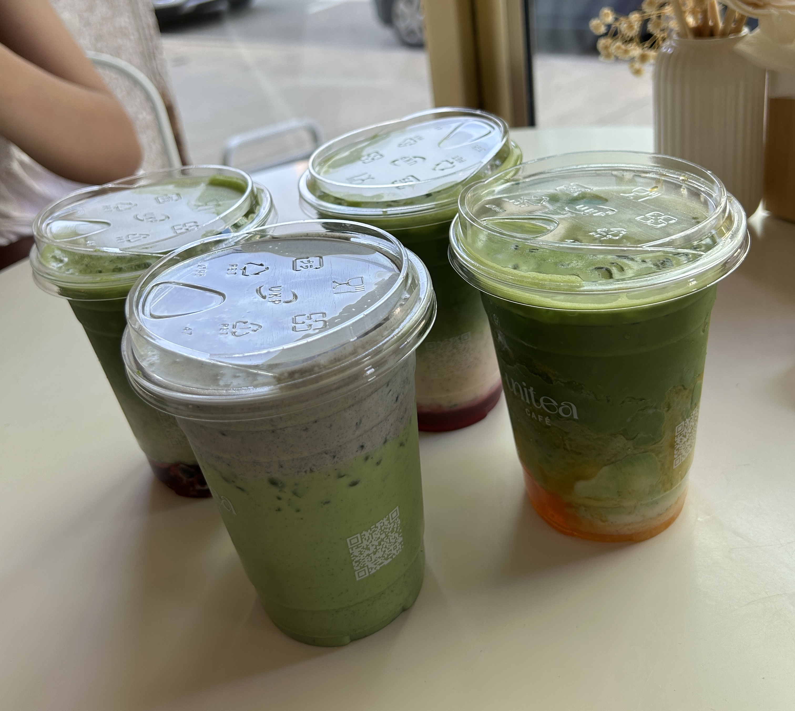

Unitea Cafe
Cafe
$
A casual cafe stop for milk teas, fruit teas, and small snacks when you want something quick and refreshing.
Read full reviewRestaurant Review Website
Browse the restaurants Brooke has reviewed.
Brooke's Reviews

A casual cafe stop for milk teas, fruit teas, and small snacks when you want something quick and refreshing.
Read full reviewA cozy Japanese restaurant known for sushi, noodle bowls, and a menu that works for both casual lunches and relaxed dinners.
Read full reviewA Vietnamese spot for pho, rice plates, and shareable appetizers, with a bar menu that makes it a fun group dinner option.
Read full review